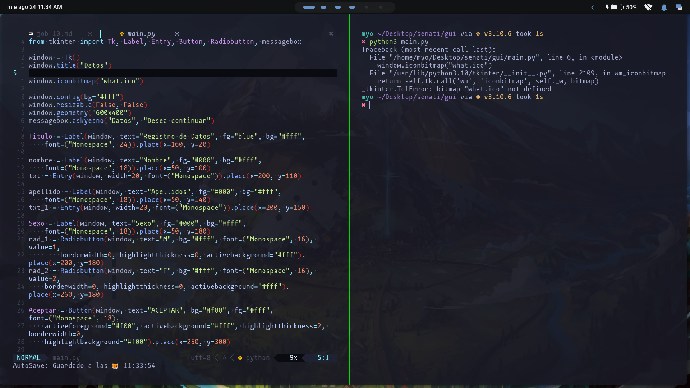
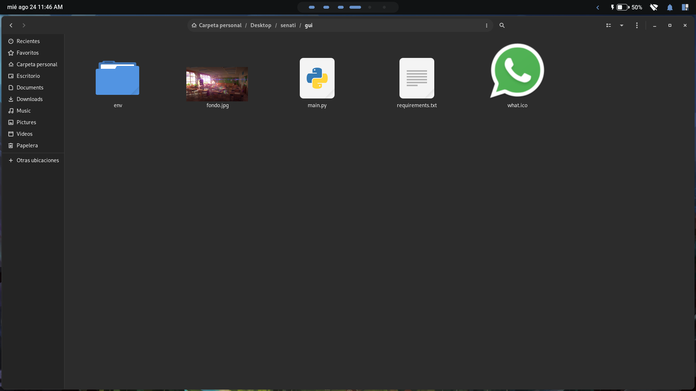
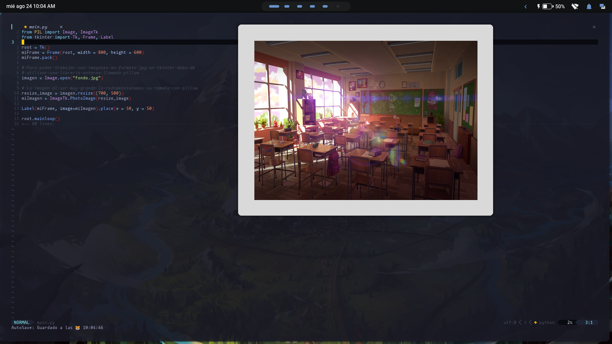
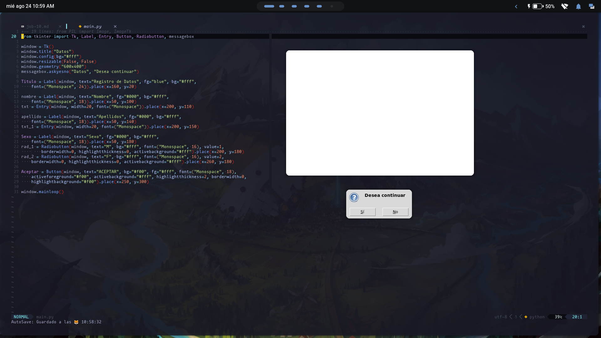
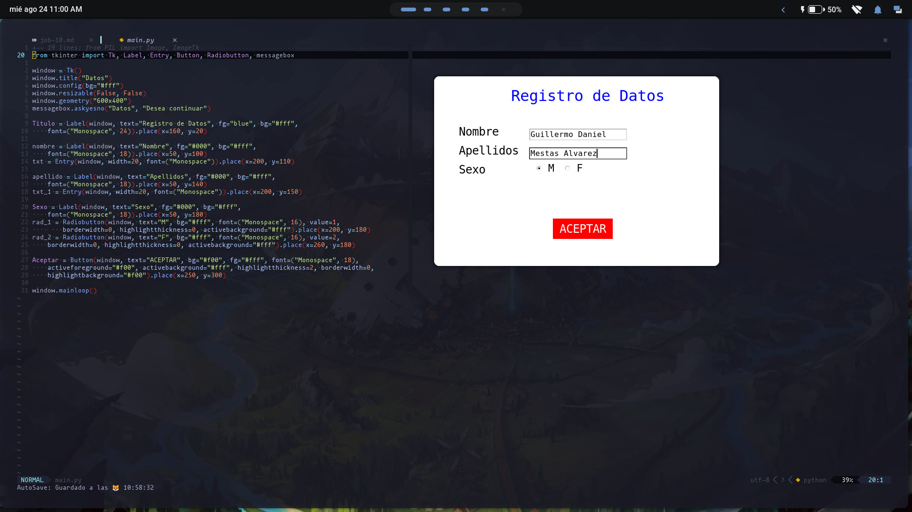

Meliora


Algoritmia de Programacion
Agosto 24.2022 | Guillermo Mestas
NOTA: Al estar trabajando en una distribucion de linux, en especifico un "Arch linux", si ve la parte superior de la ventana creada por tkinter, se observa que este no muestra el titulo ni el icono que en un windows si lo haria; ademas si coloco la instruccion "window.iconbitmap()" este me produciria un error ya que mi distribucion de linux no la soporta.
En la siguiente imagen se ve el error que saldria si coloco "window.iconbitmap()"

Como se ve en la captura al lado izquierdo se ve que coloque "window.iconbitmap('what.ico')" pero al ejecutarlo me muestra un error que me dice que "what.ico" no esta definido, es decir no me muestra un error de que no tenga el archivo, si no que al estar en un linux no lo reconoce.
Ahora si no esta convencido le muestro otra captura de pantalla en la cual muestro la carpeta donde esta el archivo python el cual tiene el nombre "main.py" y el "what.ico":

Asi que esta es la razon por la que no utilizo la instruccion "window.iconbitmap()".

En la captura se visualiza la ventana creada por tkinter con una imagen.
Al estar utilizando una imagen en formato jpg y no uno de los siguientes formatos: PGM, PPM, GIF, PNG; los cuales si soporta tkinter me vi en la obligacion de utilizar una biblioteca llamada pillow, el cual nos permite manipular imagenes directamente desde python; con la cual podremos hacer que tkinter pueda usar el formato jpg y ademas poder redimensionar sus medidas para que se pueda visualizar en la ventana, todo esto se muestra en el siguiente codigo:
from PIL import Image, ImageTk
from tkinter import Tk, Frame, Label
root = Tk()
miFrame = Frame(root, width = 800, height = 600)
miFrame.pack()
# Para poder trabajar con imagenes en formato jpg en tkinter debo de
# utilizar una libreria externa llamada pillow
imagen = Image.open("fondo.jpg")
# La imagen al ser muy grande la redimensionamos su tamaño con pillow
resize_image = imagen.resize((700, 500))
miImagen = ImageTk.PhotoImage(resize_image)
Label(miFrame, image=miImagen).place(x = 50, y = 50)
root.mainloop()
En la imagen se muestra la ventana creada de tkinter preguntandome si deseo continuar.
En la siguiente captura se muestra el formulario con los campos rellenados:

from tkinter import Tk, Label, Entry, Button, Radiobutton, messagebox
window = Tk()
window.title("Datos")
window.config(bg="#fff")
window.resizable(False, False)
window.geometry("600x400")
messagebox.askyesno("Datos", "Desea continuar")
Titulo = Label(window, text="Registro de Datos", fg="blue", bg="#fff",
font=("Monospace", 24)).place(x=160, y=20)
nombre = Label(window, text="Nombre", fg="#000", bg="#fff",
font=("Monospace", 18)).place(x=50, y=100)
txt = Entry(window, width=20, font=("Monospace")).place(x=200, y=110)
apellido = Label(window, text="Apellidos", fg="#000", bg="#fff",
font=("Monospace", 18)).place(x=50, y=140)
txt_1 = Entry(window, width=20, font=("Monospace")).place(x=200, y=150)
Sexo = Label(window, text="Sexo", fg="#000", bg="#fff",
font=("Monospace", 18)).place(x=50, y=180)
rad_1 = Radiobutton(window, text="M", bg="#fff", font=("Monospace", 16), value=1,
borderwidth=0, highlightthickness=0, activebackground="#fff").place(x=200, y=180)
rad_2 = Radiobutton(window, text="F", bg="#fff", font=("Monospace", 16), value=2,
borderwidth=0, highlightthickness=0, activebackground="#fff").place(x=260, y=180)
Aceptar = Button(window, text="ACEPTAR", bg="#f00", fg="#fff", font=("Monospace", 18),
activeforeground="#f00", activebackground="#fff", highlightthickness=2, borderwidth=0,
highlightbackground="#f00").place(x=250, y=300)
window.mainloop()